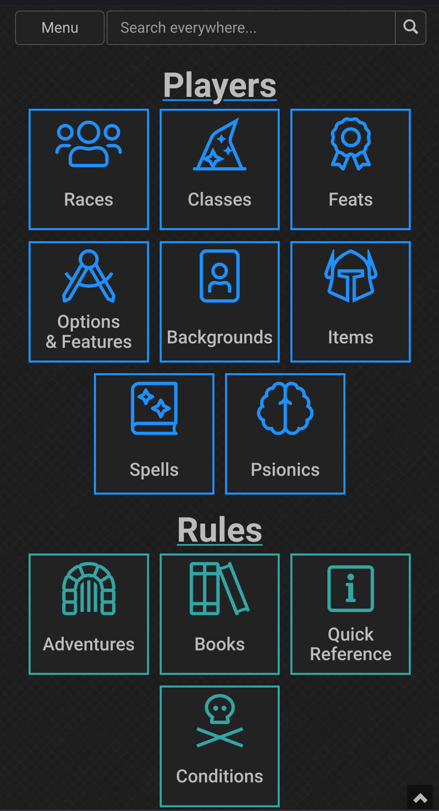
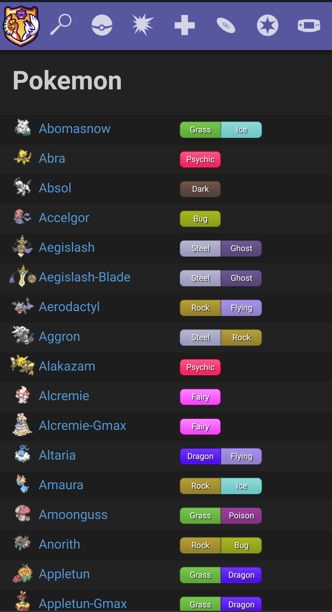
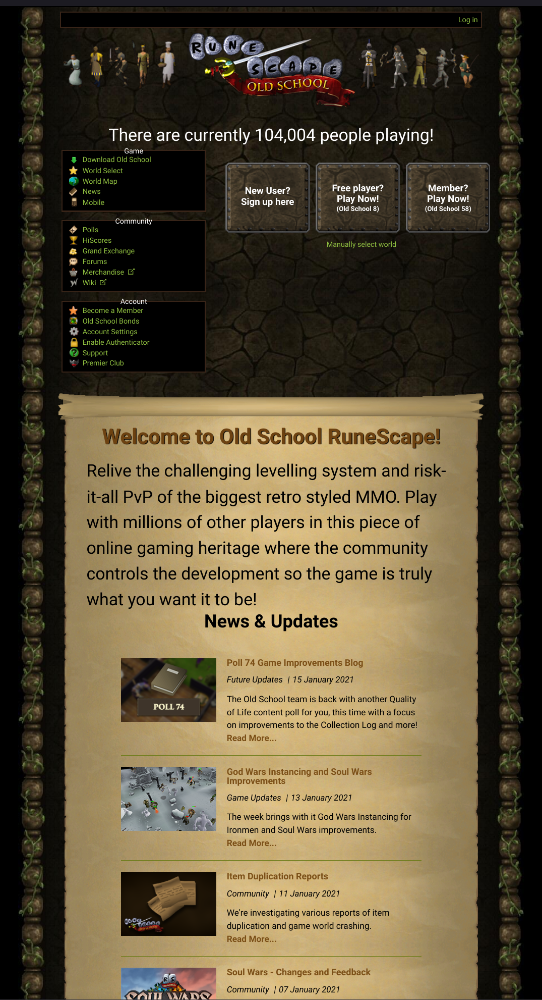

Visual Hierarchy
5etools
5e.tools
5etools, a resource for Dungeons and Dragons, uses a combination of proximity, size, and color scheme to create a clear visual hierarchy in their site. As a reference resource, the site's highest priorities are clear presentation and natural navigation, and the sections are grouped and ordered to accomodate how much each section is used. Most users will be players since each group has only one game master (GM), so player and general rule resources are placed above those specific to GMs (off-screen below the screenshot area).
White Space
Smogon
smogon.com
Smogon hosts another game reference, this time aimed toward competitive Pokemon. The page I always navigate from is the table of information on all Pokemon, pictured above. The spacing between elements emphasizes readability, but the real efforts in preserving white space show when changing the view width of the window--the number of details on each entry depend on the viewport. Rather than trying to cram information horizontally or expand each row vertically, Smogon determines which columns are necessary and which can be reserved for the linked entry.
Repitition
Old School RuneScape
oldschool.runescape.com
The use of repitition on the home page for Old School RuneScape is unconventional, but it is consistent with the selling point of the product itself. The layout is dated and simple, even when removing the "oldschool" in the address shows the modern site for the standard game. This comes from the difference between the two games: RuneScape updates and tries to modernize consistently, but Old School RuneScape intentionally maintains the aesthetic and mechanics of the game's 2007 iteration, banking on simplicity and nostalgia. I could be reading too far into it, but I believe that the simple design that remains static regardless of viewport is a deliberate and effective choice to cater to their audience and playerbase.